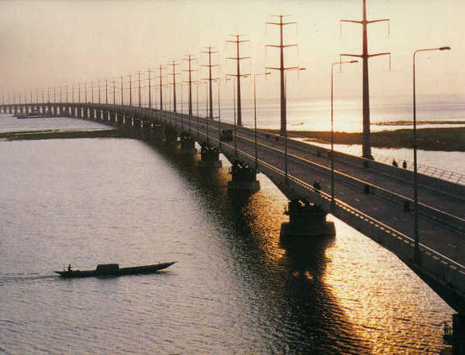

Sirajganj is a district located in the northwestern part of Bangladesh, on the banks of the Jamuna River. It is known for its handloom cottage industries, especially the production of traditional sarees. The district has a rich cultural heritage and plays an important role in the agriculture sector of the country. Sirajganj is also notable for its historical sites and vibrant local markets.
Sirajganj is situated in the Rajshahi Division and is bordered by Bogura, Pabna, Tangail, and Jamalpur districts. The Jamuna River flows through the district, making it prone to seasonal flooding but also providing fertile land for agriculture.
The economy of Sirajganj is primarily based on agriculture, with rice, jute, and vegetables being the main crops. The district is also famous for its handloom weaving industry, producing high-quality sarees and lungis that are distributed across Bangladesh.
Sirajganj has a vibrant cultural scene, with traditional music, festivals, and fairs held throughout the year. The district is home to several historical mosques, temples, and colonial-era buildings.
The district has numerous educational institutions, including government and private colleges, schools, and technical institutes. Sirajganj Government College and Sirajganj Polytechnic Institute are among the notable institutions.
For more information, visit Sirajganj District on Wikipedia.
official website: Sirajganj District Official Website